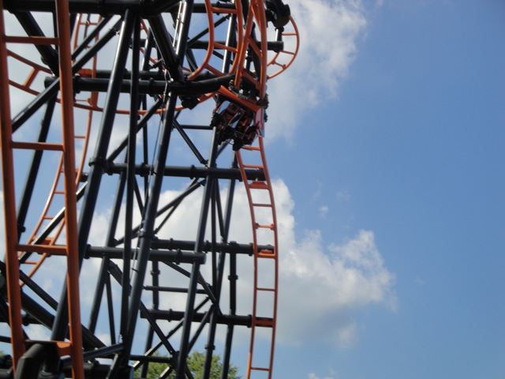
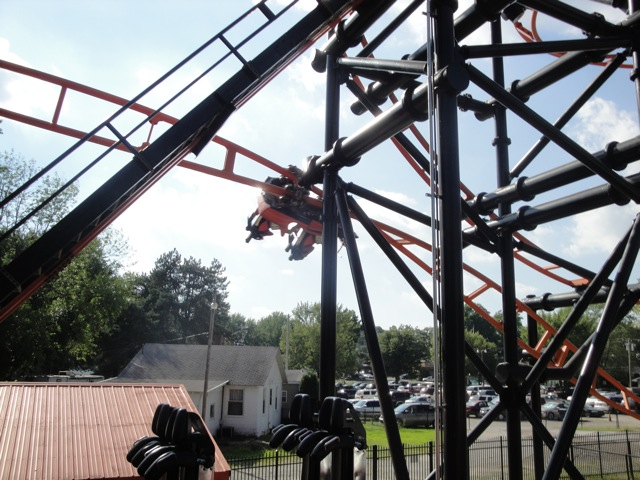
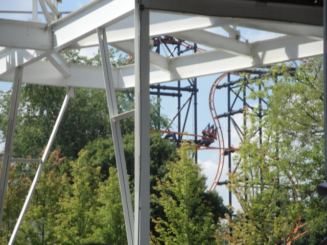
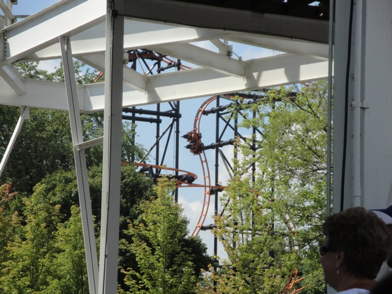
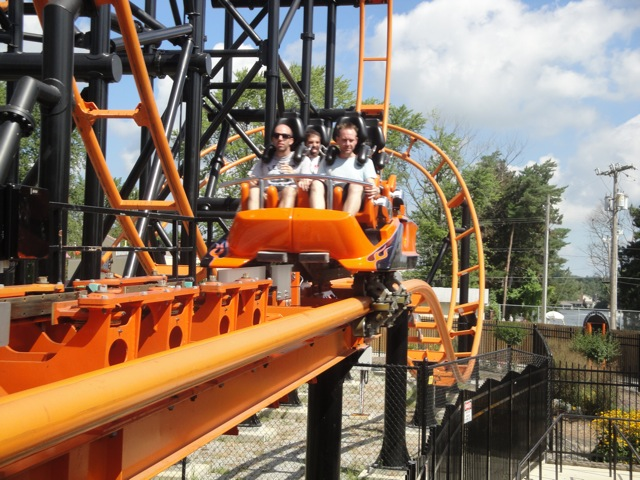
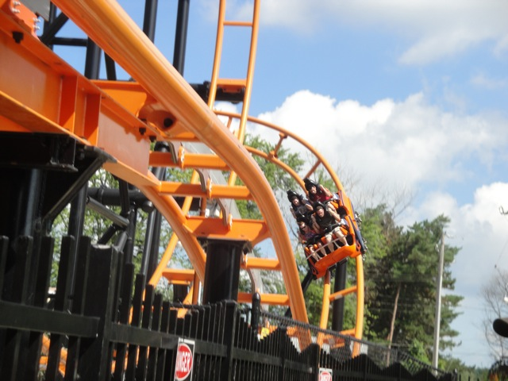
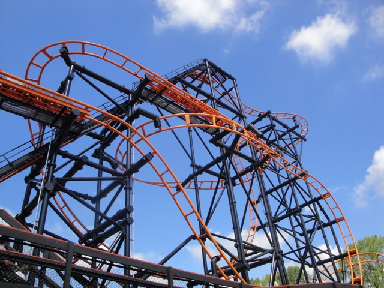

| |
Steel Hawg Review

Today, we'll be heading over to Indiana Beach where we'll be reviewing Steel Hawg. The parks S&S El Loco Coaster. You hop in, pull down the S&S Funky Shoulder Restraints along with the lap bar. And just like that, we are out of here. We roll around a quick small little turn before we rise up the lift hill. And in the typical weirdness and quirkiness of this ride, the lifthill, while not 90 degrees, is still pretty damn steep. I'd guess maybe around like 65 degrees. Then after climbing for a little bit, we reach the top, roll down a small dip before doing a funky turn in the sky. The funky turn may not be scary, but we know what its leading us to. The first drop. This ride has a first drop at an angle of 111 degrees. Yeah, pretty cool. You get a good view of Lake Shafer and Indiana from the turn, and when it comes time for the first drop, you can't see anything. But no matter, we're going down under anyway. The first drop on Steel Hawg is really interesting. At first, you don't really even gain much speed thanks to a trim, you just sort of dip down, really down until you're at 111 degrees, before we really start to gain speed and go fast as we bottom out of the first drop. We then rise up a really steep hill with a tight twist in there. While there are a couple laterals there, there's no headbanging. Just this sort fun and cool twisting. You then go through some mid course brakes. Its a bummer that we lost a lot of our speed, but as you'll soon find out, Steel Hawg isn't so much about speed as it is about doing odd and strange things that most coasters will not do. And with that said, its time for the outward banked turn. The outward banked turn is mostly just odd as you go through it. Its not uncomfortable, but it is really funny as you go through it. You get this feeling of falling out due to banking the wrong way. And I just love that. After the outward banked turn, we bank inwards like we normally do, except instead of going rightside up after the turn, we just go all the way and are now upsidedown for a few seconds. This provides us with a half loop that gives us our speed back. And that, is how you properly do the twist and dive inversion. Pay attention Manhatten Express because you really need to take notes on this. The transition upsidedown was beautiful. Not clunky with headbanging. It just rolled into the inversion. You could really apreeciate the hangtime without upsidedown shuffling, and the loop out was smooth, and not clunky. Steel Hawg gets an A for its Twist and Dive and Manhatten Express gets an F. GO BACK AND TRY AGAIN!!!! We then rise up a small hill that manages to give us a nice pop of ejector air, a nice surprise for this ride before going into another set of harsh trims. But like I said, it's about hanging and twisting in odd ways. Not speed. We go through another banked turn before going down an inline twist at an angle while we drop at the same time. Really cool form of hangtime and a lot of fun. We then go through a turnaround thats a lot of fun with a couple laterals before rising up a small bump before hitting the final brakes. Steel Hawg is a very interesting and very fun coaster. While it looks like something a high schooler doodled on their desk, it flows very well and the odd elements that you'd think wouldn't work and hurt flow very smoothly with no pain. Making this a very fun and very enjoyable coaster. Definetly check it out while at Indiana Beach.
8/10
Location: Indiana Beach
Opened: 2008
Built by: S&S Power
Last Ridden: August 12, 2010
Steel Hawg Photos







Home
|